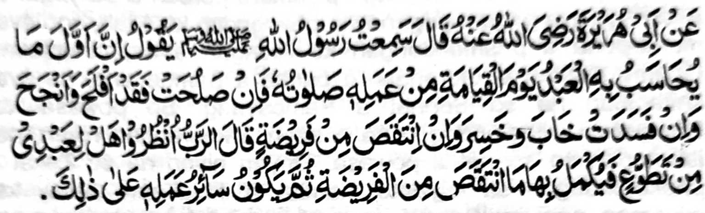

So Abu Hurairah (Radhiallaho Anho) na pitharo iyan, "Miyaneg aken so Rasulollah (Sallaiiaho 'Alaihi Wasallam) a gi-i niyan tharoon, Mata-an a aya pagampaganay a phamagitongen ko oripen sa Alongan a Maori ko manga amal iyan na so Sambayang. Opama maka-apas na sabenar a miyaka-apas sekaniyan ago miyakada-ag. O peman o mabinasa na miyabinasa sekaniyan ago miyalapis. O aden a khorangan o paralo (a Sambayang) na tharo-on o Kadenan, ‘Ilaya niyo o ba aden a rek o oripen a mini-ona niyan (a Sonnat) na tarotopen niyo seka-niyan ko pikhorangan o paralo. Oriyan niyan na giyoto den i khasowa (ko kakhokoma ko) manga ped a amal iyan.""
Giyangka-iya a Hadith na rininayag iyan a seketano a pakadakelen tano so Sambayang a sonnat ka giyoto i khitarotop ko pekhorangan o paralo a Sambayang. Aya ola-ola o kadakelan na gi-i ran tharo-on, "Kiyatangka-an den a aya gi-i minggolalan na so manga paralo a Sambayang. So manga sonnat a Sambayang na para bo ko manga ala-i paratiyaya." Benar den a kiyatangka-an den so kipamayandegen ko paralo a Sambayang, ogaid na ino ba malebod a kipamayandegen non si-i ko titho a okit iyan? Masiken a aden den a di ron khatarotopan ko isa a rokon o di na si-i ko ika dowa a rokon, sa lalayon aden a khokorangan niyan na daden a okit a khitarotopon a rowar sa makanggolalan ko manga Sonnat a Sambayang.
Aden pen a isa a Hadith a miyagosay si-i phiya-piya Pttharo iyan, "So Sambayang i piyamoro-poroan a paliyogat o Allah ago aya pagam-paganay a iphangadap ko Allah, ago aya mona-pona a phamagitongen ko Alongan a kaphangokom. Opama a aden a khorangan o paralo a Sambayang, na aya khitapalon na so Sonnat a Sambayang. So powasa ko Ramadhan i ithalondogon na o aden a khorangan niyan, na itarotopon so sonnat a powasa. Oriyan niyan na so Zakat i phakatondogon sa lagidoto mambo a ikhidi-aon. Amay ka miyoman non so Sonnat na makapened ko timbangan so mapiya amal, na giyangkoto a manosiya na pakasoleden ko Sorga, o di na khitemo rekaniyan baden so siksa ko Naraka." Giyanan i dadabi-atan o Nabi (Sallallaho 'Alaihi Wasallam) a igira a aden a somiyoled ko Islam si-i ko hadapan niyan, na aya pagam-paganay a iphagenda-o niyan non na so Sambayang.